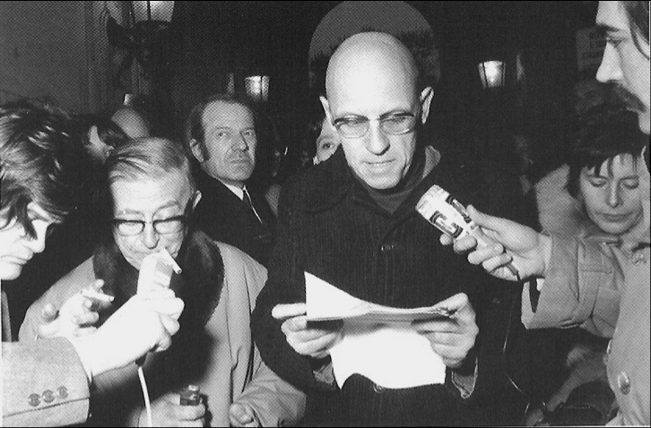
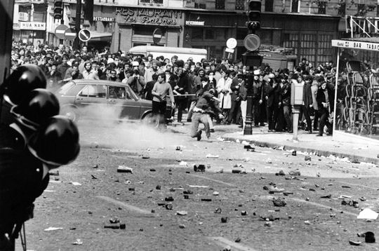

Deleuze: At one time, practice was considered an application of theory, a consequence; at other times, it had an opposite sense and it was thought to inspire theory, to be indispensable for the creation of future theoretical forms. In any event, their relationship was understood in terms of a process of totalisation.
For us, however, the question is seen in a different light […] The relationship which holds in the application of a theory is never one of resemblance. Moreover, from the moment a theory moves into its proper domain, it begins to encounter obstacles, walls, and blockages which require its relay by another type of discourse (it is through this other discourse that it eventually passes to a different domain). Practice is a set of relays from one theoretical point to another, and theory is a relay from one practice to another. No theory can develop without eventually encountering a wall, and practice is necessary for piercing this wall.
For example, your [Foucault’s] work began in the theoretical analysis of the context of confinement, specifically with respect to the psychiatric asylum within a capitalist society in the nineteenth century. Then you became aware of the necessity for confined individuals to speak for themselves, to create a relay (it's possible, on the contrary, that your function was already that of a relay in relation to them); and this group is found in prisons — these individuals are imprisoned. It was on this basis that you organised the information group for prisons, the object being to create conditions that permit the prisoners themselves to speak.
[…] This was not an application; nor was it a project for initiating reforms or an enquiry in the traditional sense. The emphasis was altogether different: a system of relays within a larger sphere, within a multiplicity of parts that are both theoretical and practical. A theorising intellectual, for us, is no longer a subject, a representing or representative consciousness.
Foucault: It seems to me that the political involvement of the intellectual was traditionally the product of two different aspects of his activity: his position as an intellectual in bourgeois society, in the system of capitalist production and within the ideology it produces or imposes (his exploitation, poverty, rejection, persecution, the accusations of subversive activity, immorality, etc); and his proper discourse to the extent that it revealed a particular truth, that it disclosed political relationships where they were unsuspected. These two forms of politicisation did not exclude each other, but, being of a different order, neither did they coincide. Some were classed as "outcasts" and others as "socialists." During moments of violent reaction on the part of the authorities, these two positions were readily fused: after 1848, after the Commune, after 1940.
[…] The intellectual's role is no longer to place himself "somewhat ahead and to the side" in order to express the stifled truth of the collectivity; rather, it is to struggle against the forms of power that transform him into its object and instrument in the sphere of "knowledge," "truth," "consciousness," and "discourse."
In this sense theory does not express, translate, or serve to apply practice: it is practice. But it is local and regional, as you said, and not totalising. This is a struggle against power, a struggle aimed at revealing and undermining power where it is most invisible and insidious. It is not to "awaken consciousness" that we struggle (the masses have been aware for some time that consciousness is a form of knowledge; and consciousness as the basis of subjectivity is a prerogative of the bourgeoisie), but to sap power, to take power; it is an activity conducted alongside those who struggle for power, and not their illumination from a safe distance.
Deleuze: A theory is exactly like a box of tools. It has nothing to do with the signifier. It must be useful. It must function. And not for itself. If no one uses it, beginning with the theoretician himself (who then ceases to be a theoretician), then the theory is worthless or the moment is inappropriate. We don't revise a theory, but construct new ones; we have no choice but to make others. It is strange that it was Proust, an author thought to be a pure intellectual, who said it so clearly: treat my book as a pair of glasses directed to the outside; if they don't suit you, find another pair; I leave it to you to find your own instrument, which is necessarily an investment for combat. A theory does not totalise; it is an instrument for multiplication and it also multiplies itself. It is in the nature of power to totalise and it is your position, and one I fully agree with, that theory is by nature opposed to power.
[…] If the protests of children were heard in kindergarten, if their questions were attended to, it would be enough to explode the entire educational system. There is no denying that our social system is totally without tolerance; this accounts for its extreme fragility in all its aspects and also its need for a global form of repression. In my opinion, you were the first — in your books and in the practical sphere — to teach us something absolutely fundamental: the indignity of speaking for others. We ridiculed representation and said it was finished, but we failed to draw the consequences of this "theoretical" conversion-to appreciate the theoretical fact that only those directly concerned can speak in a practical way on their own behalf.
Foucault: And when the prisoners began to speak, they possessed an individual theory of prisons, the penal system, and justice. It is this form of discourse which ultimately matters, a discourse against power, the counter-discourse of prisoners and those we call delinquents — and not a theory about delinquency. […] I was surprised that so many who had not been to prison could become interested in its problems, surprised that all those who had never heard the discourse of inmates could so easily understand them. How do we explain this? Isn't it because, in a general way, the penal system is the form in which power is most obviously seen as power? To place someone in prison, to confine him, to deprive him of food and heat, to prevent him from leaving, making love, etc. — this is certainly the most frenzied manifestation of power imaginable.
[…] What is fascinating about prisons is that, for once, power doesn't hide or mask itself; it reveals itself as tyranny pursued into the tiniest details; it is cynical and at the same time pure and entirely "justified”, because its practice can be totally formulated within the framework of morality. Its brutal tyranny consequently appears as the serene domination of Good over Evil, of order over disorder.
Deleuze: Yes, and the reverse is equally true. Not only are prisoners treated like children, but children are treated like prisoners. Children are submitted to an infantilisation which is alien to them. On this basis, it is undeniable that schools resemble prisons and that factories are its closest approximation.
[…] On the basis of our actual situation, power emphatically develops a total or global vision. That is, all the current forms of repression (the racist repression of immigrant workers, repression in the factories, in the educational system, and the general repression of youth) are easily totalised from the point of view of power. We should not only seek the unity of these forms in the reaction to May '68, but more appropriately, in the concerted preparation and organisation of the near future, French capitalism now relies on a "margin" of unemployment and has abandoned the liberal and paternal mask that promised full employment. In this perspective, we begin to see the unity of the forms of repression: restrictions on immigration, once it is acknowledged that the most difficult and thankless jobs go to immigrant workers — repression in the factories, because the French must reacquire the "taste" for increasingly harder work; the struggle against youth and the repression of the educational system, because police repression is more active when there is less need for young people in the work force. A wide range of professionals (teachers, psychiatrists, educators of all kinds, etc.) will be called upon to exercise functions that have traditionally belonged to the police. This is something you predicted long ago, and it was thought impossible at the time: the reinforcement of all the structures of confinement.
Against this global policy of power, we initiate localised counter-responses, skirmishes, active and occasionally preventive defences. We have no need to totalise that which is invariably totalised on the side of power; if we were to move in this direction, it would mean restoring the representative forms of centralism and a hierarchical structure. We must set up lateral affiliations and an entire system of networks and popular bases; and this is especially difficult. In any case, we no longer define reality as a continuation of politics in the traditional sense of competition and the distribution of power, through the so-called representative agencies of the Communist Party or the General Workers Union(6). Reality is what actually happens in factories, in schools, in barracks, in prisons, in police stations. And this action carries a type of information which is altogether different from that found in newspapers.
Foucault: Isn't this difficulty of finding adequate forms of struggle a result of the fact that we continue to ignore the problem of power? After all, we had to wait until the nineteenth century before we began to understand the nature of exploitation, and to this day, we have yet to fully comprehend the nature of power. […] We know that it is not in the hands of those who govern. But, of course, the idea of the "ruling class" has never received an adequate formulation, and neither have other terms, such as "to dominate ... .. to rule ... .. to govern," etc. These notions are far too fluid and require analysis. We should also investigate the limits imposed on the exercise of power-the relays through which it operates and the extent of its influence on the often insignificant aspects of the hierarchy and the forms of control, surveillance, prohibition, and constraint. Everywhere that power exists, it is being exercised. No one, strictly speaking, has an official right to power; and yet it is always excited in a particular direction, with some people on one side and some on the other. It is often difficult to say who holds power in a precise sense, but it is easy to see who lacks power.
Source